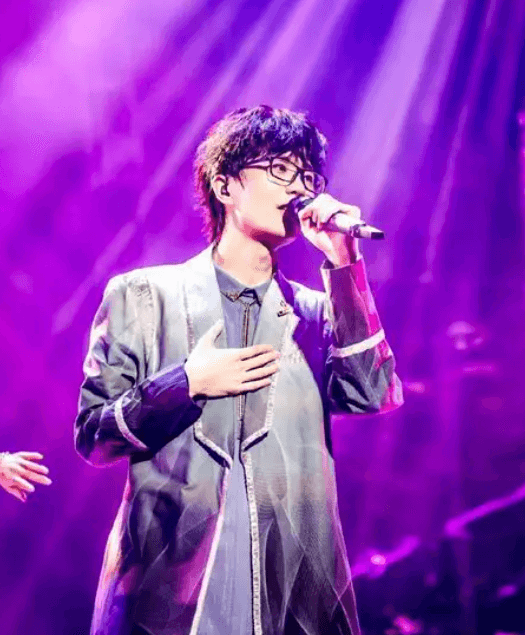

·简介😊

许嵩（Vae），中国内地著名唱作人、音乐制作人。
他并非选秀出道，也鲜少在综艺中露面，而是从网络起步，凭借其独特的创作才华和深刻的歌词，一步步成长为华语乐坛一个不可忽视的"音乐符号"。
他包揽了绝大多数作品的词、曲、编曲及制作，是真正的"一人乐队"。其音乐风格独特，融合了中国风、R&B、抒情等多种元素，歌词往往蕴含深刻的思考和细腻的情感，深受粉丝喜爱。
从早期的《玫瑰花的葬礼》《城府》到后来的《半城烟沙》《雅俗共赏》，许嵩始终保持着独立创作的姿态，用音乐讲述自己的故事，也成为了一代人的青春记忆。
音乐风格演变~
- 早期（网络时期）：
《玫瑰花的葬礼》、《断桥残雪》、《灰色头像》——风格偏向流行、R&B，带有淡淡的忧伤，是无数90后的青春记忆。 - 中期（探索期）：
《苏格拉没有底》、《梦游计》——音乐风格更加多元，歌词充满哲学思辨和社会观察，如《胡萝卜须》、《拆东墙》。 - 近期（成熟期）：
《寻宝游戏》、《呼吸之野》——风格偏向摇滚、布鲁斯，制作更加精良，思想性达到新高度，如《乌鸦》、《假摔》。
·代表作❤️
~来听《科幻》喵，来感受宇宙级别的浪漫~
~来听《留香》喵，来感受初见即“再见”的邂逅~
~来听《庞贝》喵，来感受被失落古城埋葬的告白~
~来听《有何不可》喵，来感受最温柔最纯粹的爱恋~
~来听《老古董》喵，来感受艺术坚守和时代变更的冲突~
~来听《留香》喵，来感受初见即“再见”的邂逅~
~来听《庞贝》喵，来感受被失落古城埋葬的告白~
~来听《有何不可》喵，来感受最温柔最纯粹的爱恋~
~来听《老古董》喵，来感受艺术坚守和时代变更的冲突~